Q
慢慢出現
顯影、3D 翻面、飛進盒子。
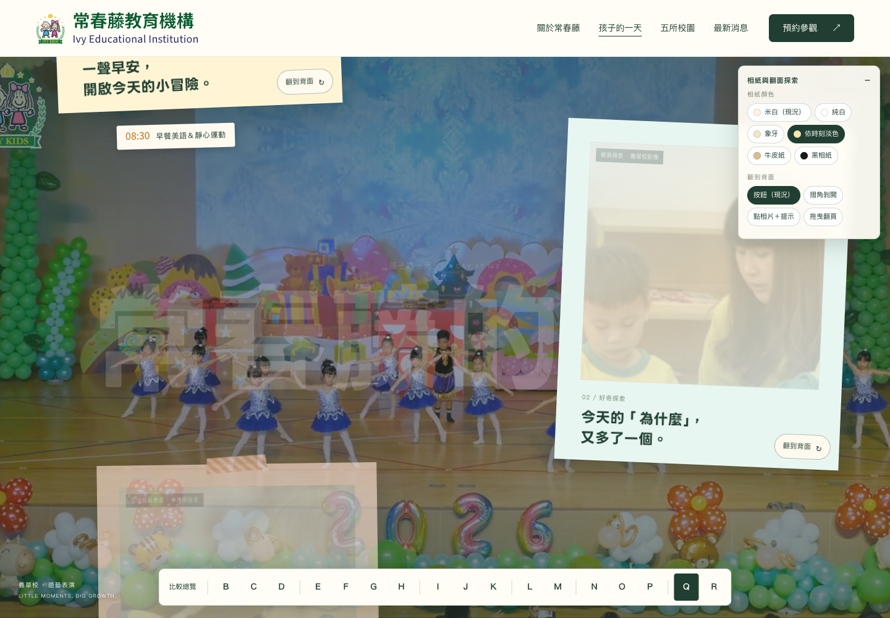
觀看動態提案 ↗從 N 延伸：相片進入視窗時像拍立得一樣慢慢顯影，橘色時間戳最後才浮現。相片跟著游標微傾並有光澤，點相片任一處就翻面。收尾六張相片隨捲動飛進木盒。
孩子的一天 / DESIGN EXPLORATION 02 · 07
固定影片背景，沿著時間慢慢看。
第六輪拿掉繩子只留相片和貼紙，收尾探索三種收集方式；第五輪把 I 的翻面相片串在細繩上；第四輪把 D 的相紙和 E 的時鐘合在一起；第三輪把「時間」本身放進畫面；第二輪比較照片與文字的相遇方式。點選任一提案，可下滑觀看完整轉場。園方目前選定 D。
第七輪 / DESIGN EXPLORATION 07 · 2026-09-18
N 的延伸：顯影、貼紙三選一、更高級的翻面、收進盒子。
顯影、3D 翻面、飛進盒子。

觀看動態提案 ↗從 N 延伸：相片進入視窗時像拍立得一樣慢慢顯影，橘色時間戳最後才浮現。相片跟著游標微傾並有光澤，點相片任一處就翻面。收尾六張相片隨捲動飛進木盒。
three.js：真的紙、真的光。
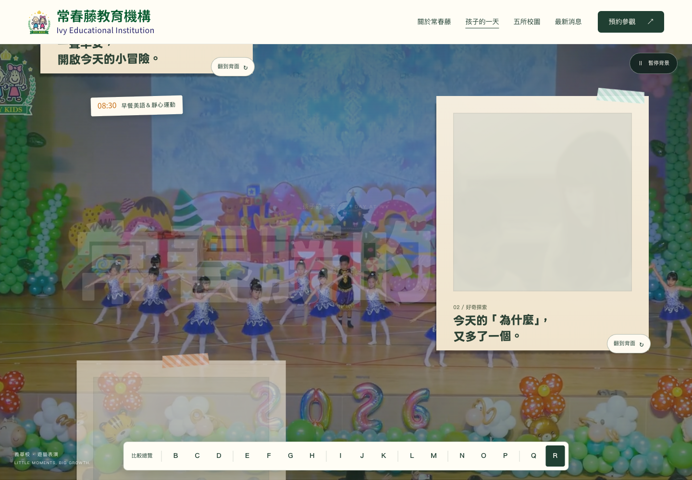
觀看動態提案 ↗與 Q 同版面，但每張相片改由 three.js 渲染成一張有厚度感的紙：翻面時中段會彎曲再攤平、抬起時在牆上投影、游標移動時有一盞光跟著走。顯影同樣在紙上進行。無 WebGL 時自動退回 Q 的 CSS 版。
第六輪 / DESIGN EXPLORATION 06 · 2026-09-17
繩子與夾子拿掉；兩種相紙、三種「收集起來」的收尾，可互換。
方形相紙，收進相本。
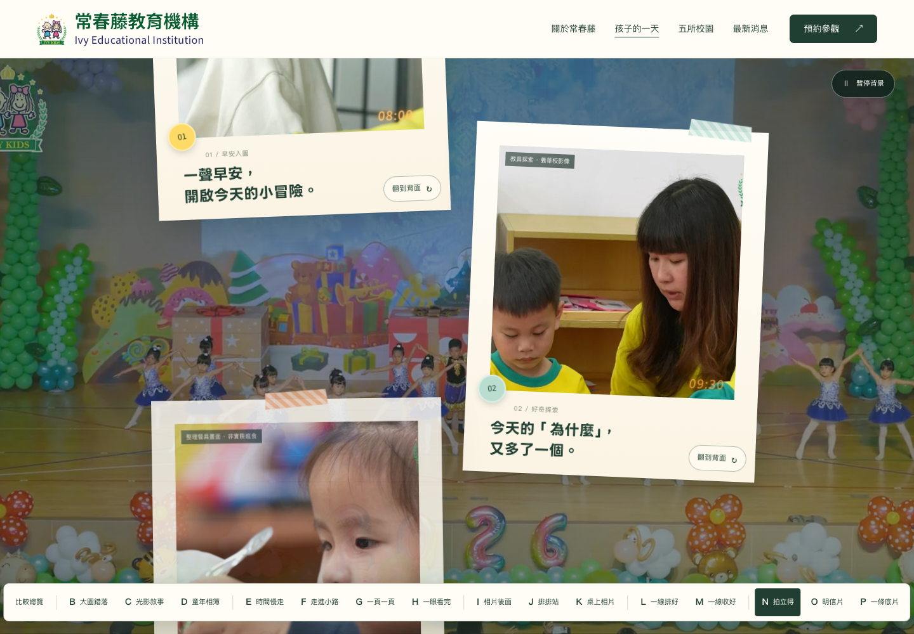
觀看動態提案 ↗方形拍立得：厚相紙、微光澤，照片右下角是底片機的橘色時間章，紙膠帶和號碼貼紙把它貼在牆上。翻到背面看故事。收尾是一頁相本，六張相片用角貼固定。
全幅照片，收進信封。
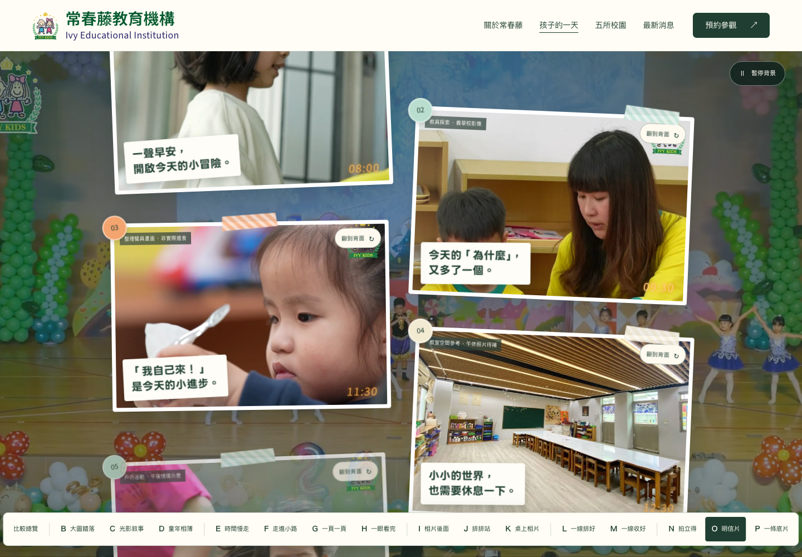
觀看動態提案 ↗明信片：薄白邊、照片佔滿，標題是貼在照片上的一張白色標籤。翻到背面是真的明信片：郵票、印著時間的郵戳、地址線，故事寫在左半邊。收尾六張扇形收進信封。
方形相紙，變成一條底片。
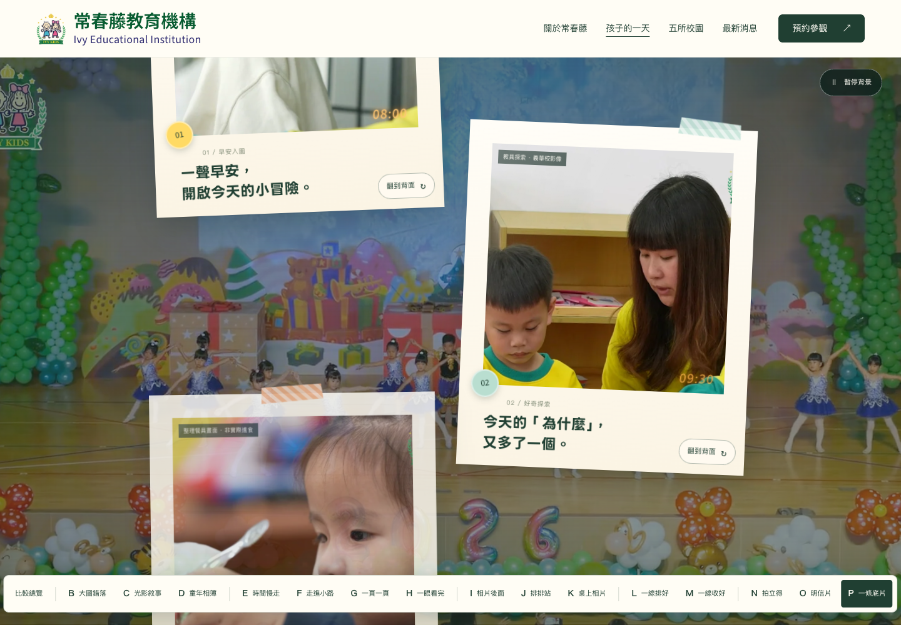
觀看動態提案 ↗與 N 同樣的方形拍立得，只有收尾不同：六個時刻排成一條有齒孔的底片，格號與時間是底片機的橘色。像把今天沖洗出來。
第五輪 / DESIGN EXPLORATION 05 · 2026-09-17
I 的翻面相片＋更有質感的細繩與木夾，時鐘拿掉；兩版只差收尾。
看到最後，六張掛成一排。
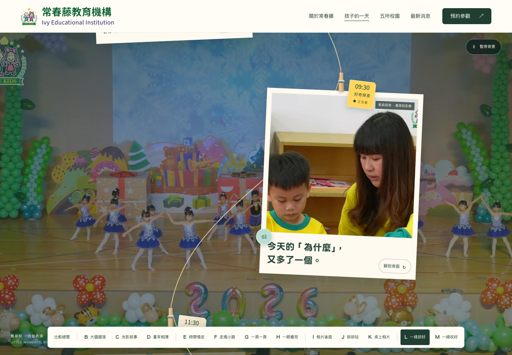
觀看動態提案 ↗保留 I 的翻面：正面一句標題，翻過去看故事。時鐘拿掉，改用細繩和木夾把相片一張張串起來。捲到最後，六張相片水平掛在一條線上，點任一張回到那個時刻。
看到最後，六張疊成一疊。
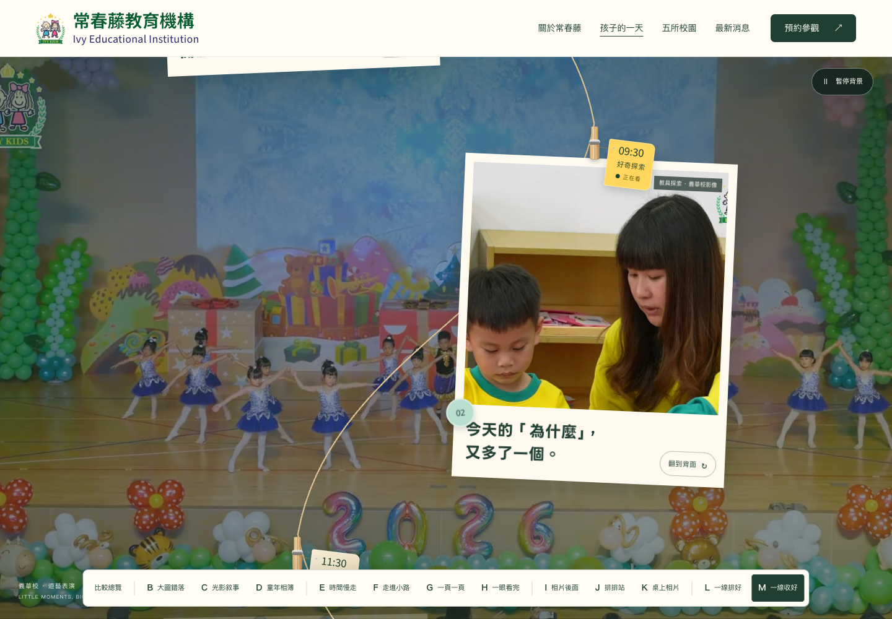
觀看動態提案 ↗與 L 同一條繩子、同樣的翻面相片，只有收尾不同：六張相片疊成一疊收藏起來，滑過任一張會浮起來，點了回到那個時刻。
第四輪 / DESIGN EXPLORATION 04 · 2026-09-17
D 的相紙質感＋E 的時鐘；三版各自回答「文字怎麼和相片合體」與「時間軸長什麼樣」。
翻過來，故事在背面。
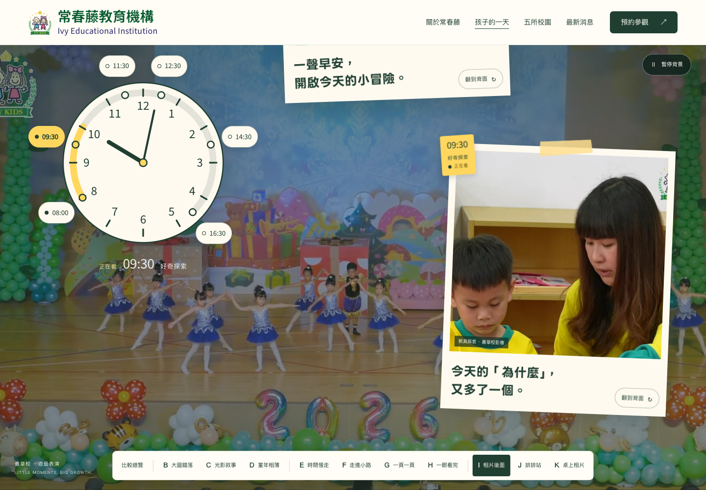
觀看動態提案 ↗相片正面只留一句手寫標題，故事寫在背面，按「翻到背面」翻過來。時鐘不只走時間，錶盤外圈六個時間都能點；手機縮成一條「今天的進度」。
掛在繩子上，排排站。
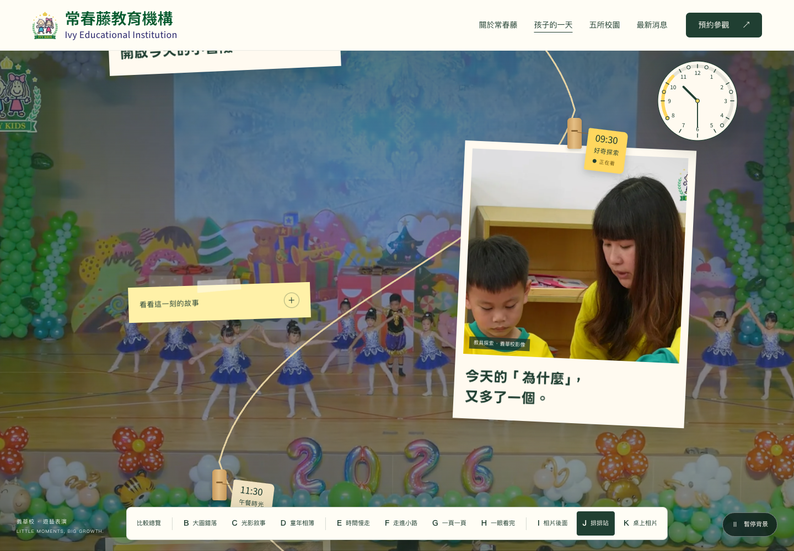
觀看動態提案 ↗時間軸變成一條曬照片的繩子，木夾上的吊牌寫著時間。相片旁邊貼一張便利貼，想看故事再翻開；角落的小時鐘安靜地跟著走。
相片疊上桌，故事寫在邊上。
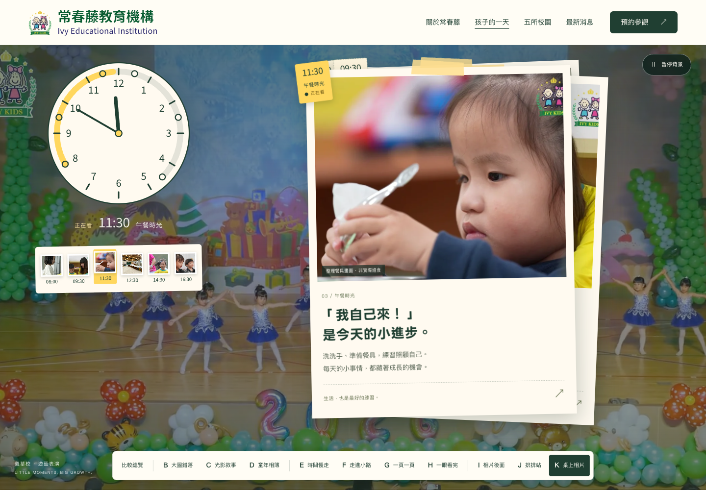
觀看動態提案 ↗寬邊拍立得，故事就寫在相紙邊上，不用收合。往下捲相片一張張疊到桌上，翻過的相片邊角還露在下面；左邊的時鐘和六張貼紙縮圖就是索引。
第三輪 / DESIGN EXPLORATION 03 · 2026-09-17
四種新構圖，同樣的影片、文案與六個片刻。
時針跟著你捲動。
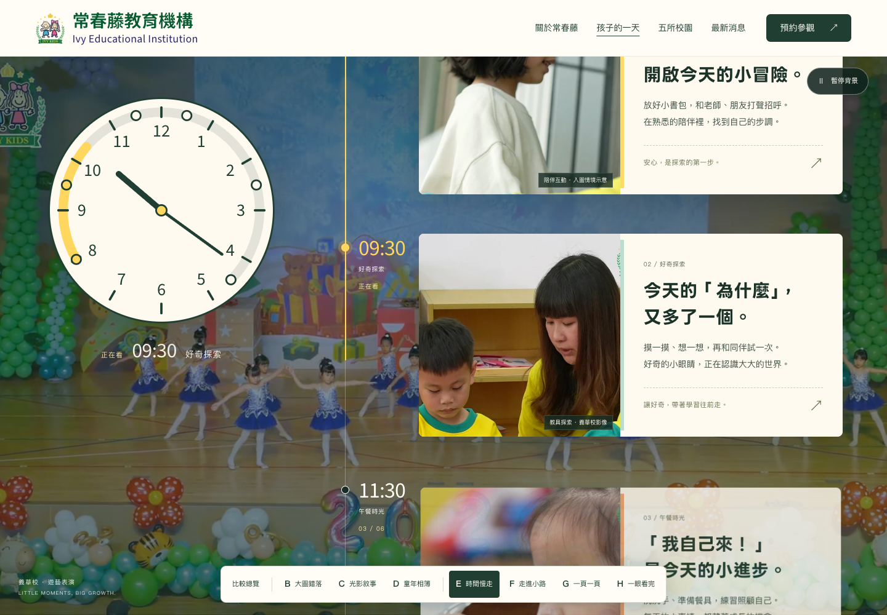
觀看動態提案 ↗把「一天」變成看得見的時間。時鐘固定在左側，指針從 08:00 走到 16:30，六個片刻沿著右側的軌道排隊出現。
沿著路，一站一站。
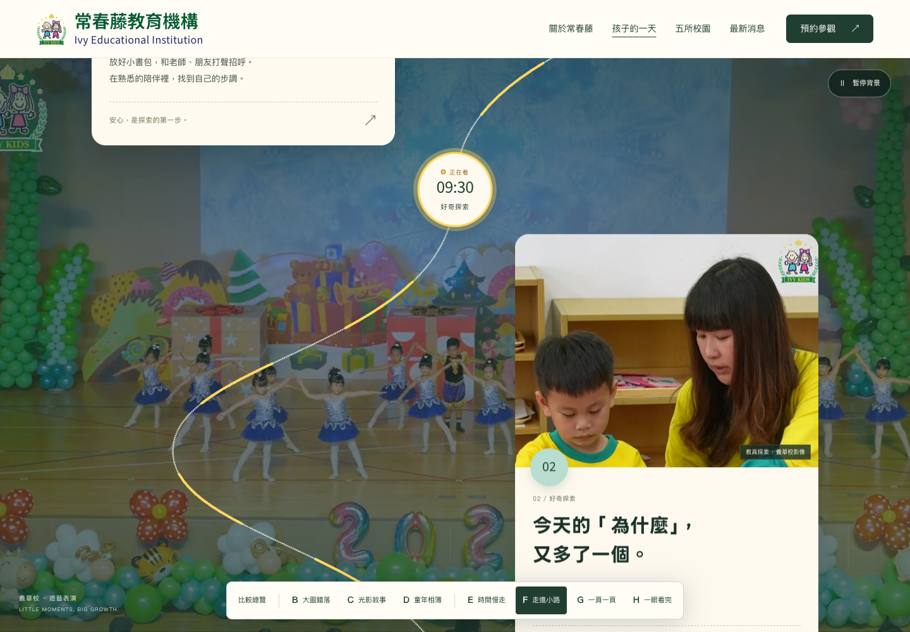
觀看動態提案 ↗時間軸變成一條會轉彎的小路。走過的路段亮起暖黃，每個轉折都是一個時間站牌，像跟著孩子在園裡散步。
每個時刻，一整頁。
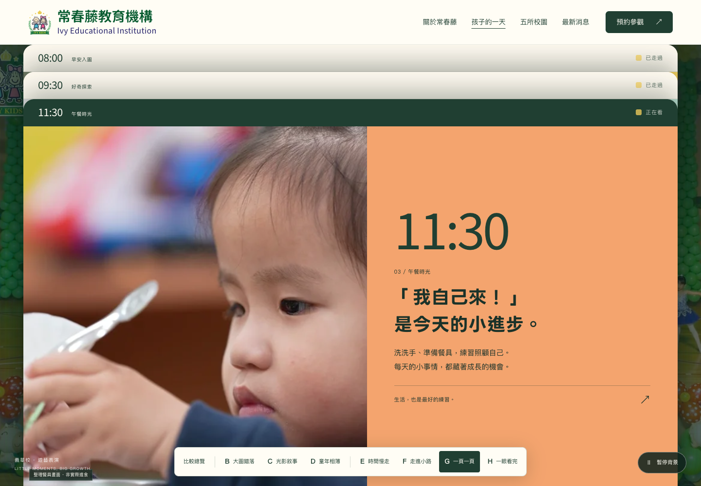
觀看動態提案 ↗每個時刻佔滿整個畫面：左邊照片，右邊大大的時間與故事。往下捲動，新的一頁疊上來，走過的時刻留在上方當索引。
六格，一次看完。
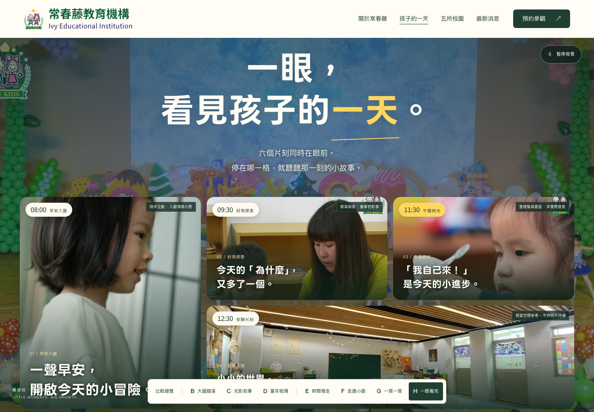
觀看動態提案 ↗不用往下捲太久，六個片刻排成一面牆。時間標籤在每格左上角，停在哪一格，那一刻的小故事就浮上來。適合當首頁的精簡版。
第二輪 / DESIGN EXPLORATION 02
D 已由園方選定，並完成時間節點精修。


{kind=link}
{kind=link}
{kind=link}
{kind=link}
{kind=link}
{kind=link}
{kind=link}
{kind=link}
{kind=link}
{kind=link}
{kind=link}
{kind=link}
{kind=link}
{kind=link}
{kind=link}
{kind=link}
{kind=link}
{kind=link}
{kind=link}
{kind=link}
{kind=link}
{kind=link}
{kind=link}
{kind=link}